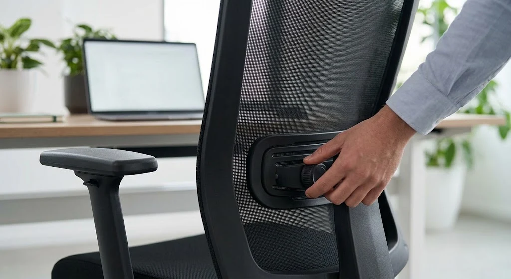

Apa Itu Kursi Kantor dan Mengapa Penting bagi Produktivitas Tim?
Kursi kantor adalah kursi kerja yang dirancang khusus untuk aktivitas duduk dalam waktu lama di lingkungan kerja, biasanya dilengkapi mekanisme penyesuaian tinggi dan sandaran. Karyawan yang duduk berjam-jam setiap hari umumnya membutuhkan penyangga tubuh yang lebih baik dibanding kursi biasa.
Kenyamanan duduk berkaitan erat dengan konsentrasi kerja. Kursi kantor yang tidak mendukung postur tubuh dapat membuat karyawan mudah lelah dan kurang fokus, sementara kursi kerja kantor yang dirancang ergonomis membantu menjaga stamina selama jam kerja berlangsung.
Jenis-Jenis Kursi Kantor yang Umum Digunakan di Kantor dan Sekolah
Setiap ruang kerja memiliki kebutuhan yang berbeda, sehingga jenis kursi kantor yang dipilih pun bisa bervariasi tergantung fungsi ruangan dan penggunanya.
Kursi Kerja Standar dan Kursi Kerja Kantor
Kursi kerja standar umumnya digunakan oleh staf operasional harian. Model ini biasanya dilengkapi roda, mekanisme hidrolik untuk mengatur tinggi dudukan, serta sandaran punggung yang cukup fleksibel mengikuti gerakan tubuh saat bekerja di depan komputer.
Kursi Direktur dan Kursi Rapat
Kursi direktur biasanya berukuran lebih besar dengan sandaran tinggi dan bahan yang lebih mewah, mencerminkan posisi penggunanya. Sementara itu, kursi rapat dirancang lebih ringkas dan mudah dipindahkan, cocok untuk ruang meeting yang digunakan bergantian oleh banyak orang.
Kursi Minimalis untuk Ruang Kerja Kompak
Kursi minimalis cocok untuk kantor dengan luas ruangan terbatas atau konsep interior yang lebih sederhana. Meski tampilannya ringkas, kursi jenis ini tetap sebaiknya memperhatikan aspek ergonomi dasar seperti tinggi dudukan yang sesuai.

Bagaimana Cara Memilih Kursi Kantor yang Ergonomis?
Kursi kantor ergonomis dipilih dengan memperhatikan kesesuaian tinggi dudukan terhadap meja kerja, dukungan pada punggung bagian bawah, serta kemudahan menyesuaikan posisi sandaran tangan. Kombinasi faktor ini membantu menjaga postur tubuh tetap baik.
Beberapa hal yang perlu dicek sebelum membeli antara lain kedalaman dudukan yang tidak menekan bagian belakang lutut, sandaran punggung yang mengikuti lekuk tulang belakang, serta ketersediaan penyangga kepala pada model tertentu untuk pemakaian intensif di depan layar komputer.
Mesh vs Busa: Bahan Dudukan Mana yang Lebih Nyaman?
Kursi kantor berbahan mesh umumnya lebih dingin karena sirkulasi udaranya lebih baik, sehingga cocok untuk ruangan tanpa pendingin ruangan yang optimal. Sebaliknya, kursi berbahan busa atau kulit sintetis terasa lebih empuk namun cenderung lebih hangat saat dipakai dalam waktu lama.
Pemilihan bahan dudukan sebaiknya disesuaikan dengan kondisi ruangan dan preferensi kenyamanan penggunanya, karena tidak ada satu bahan yang secara mutlak lebih unggul untuk semua situasi.
Apa Saja Kesalahan Umum saat Membeli Kursi Kantor?
Kesalahan paling umum adalah memilih kursi kantor hanya berdasarkan harga termurah tanpa memperhatikan kualitas mekanisme hidrolik dan daya tahan bahan. Selain itu, banyak pembeli mengabaikan kesesuaian ukuran kursi dengan tinggi meja kerja yang sudah ada.
Kesalahan lain adalah tidak mencoba langsung kenyamanan kursi sebelum membeli dalam jumlah banyak untuk kebutuhan kantor. Idealnya, lakukan uji coba pada beberapa unit contoh terlebih dahulu sebelum melakukan pengadaan dalam skala besar.
Kesimpulan
Sesuaikan jenis kursi kantor dengan fungsi ruangan: kerja harian, rapat, atau ruang direktur. Prioritaskan fitur ergonomis seperti sandaran punggung, sandaran tangan, dan mekanisme hidrolik. Pilih bahan dudukan sesuai kondisi ruangan dan preferensi kenyamanan tim. Lakukan uji coba sebelum melakukan pengadaan kursi kantor dalam jumlah besar, serta konsultasikan kebutuhan spesifik kantor Anda dengan supplier terpercaya sebelum membeli.